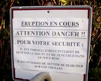

 Ce qui est rassurant en été à la Réunion, c'est que ce n'est pas la saison cyclonique, mais les prophètes de malheur ont d'autre signes pour annoncer la fin du monde. Une activité sismique hors du commun et une éclipse solaire presque totale. La fin du Monde !!! Le Piton de la Fournaise a eu une période d'activité de fin mars à fin avril. Puis le 11 juin, après une nouvelle activité sismique, cinq fissures se créent et donnent naissance à une coulée de lave qui ira jusqu'à la route nationale qui ceinture l'île. Le 21 juin, la première éclipse totale du millénaire traverse l'île de Madagascar (site madagascar-eclipse2001.com disparu) et la Réunion. La fin du monde ?
Loin de tout catastrophisme, l'agence photographique IP Réunion a couvert ces deux évènements remarquables avec son image du jour. Un reportage raconte la progression des deux dernières coulées de lave. D'autres reportages méritent le détour ainsi que les vues panoramiques de Mafate ou de l'église de Sainte Anne.
Volcan l'a pété et de nombreux sites ont publié leurs photos. Mais en dehors de cela, le Piton de la Fournaise reste un sujet captivant pour les sites qui s'y intéressent à commencer par celui de l'Observatoire Volcanologique du Piton de la Fournaise avec sa webcam. Le musée du volcan (site disparu) est aussi une étape sur le web mais surtout sur place. Le Centre de Documentation et de Diffusion du Volcanisme ne semble plus maintenu mais offre une bonne couverture des éruptions de 98 et 2000. L'académie de la Réunion propose un historique des éruptions ainsi que quelques photos à usage pédagogique, quant au site de Bertrand, il nous propose un reportage photos sur la réalisation de cendriers pays.
Comme le reportage n'est plus en ligne, je vais essayer de vous décrire comment faire un cendrier péï: Il vous faut une pelle solide, genre bien épaisse avec un manche métalique au besoin. Approchez vous d'une coulée de lave là où la lave est pâteuse et coule lentement. Avec votre pelle solide, prenez un paquet de lave. Retournez de paquet sur le sol. La suite est un jeu de rapidité : avec la bout de votre pelle tappez vigoureusement sur le pâté de lave de manière à faire un trou de plus en plus grand. Il faut le faire vite avant que la lave ne seche. Ensuite, attendez quand même un moment avant de prendre votre cendrier avec les mains.
J'ai déjà parlé du piton de la fournaise en 1998 alors qu'avait lieu la première éruption après six ans sans activité volcanique. Mais dernièrement depuis 2000 pas moins de cinq éruptions ont eu lieu en différent endroits de l'enclos (la grande zone volcanique au paysage lunaire entourée d'une grande caldéra) :
Voilà que je découvre un nouveau site sur ce sujet au moment ou
l'enclos s'ouvre à nouveau au public. VOLCARUN (devenu fournaise.info) est LE site du Piton de la fournaise, on y retrouve son histoire et les outils pédagogiques pour en parler. Vous pouvez même vous abonner à l'alerte email en cas d'éruption. Bref très bon site de vulgarisation à ne pas manquer.
Pour ce qui est des dernières éruptions, la société spotimage (qui n'a plus de site aujourd'hui) a eu la bonne idée de mettre en ligne une campagne inhabituelle de photos satellites durant l'éruption de juin-juillet 1998.
L'éruption de janvier 2002 qui a agrandit l'île de la Réunion.
Avec l'éruption de 2019 je fais le point sur les 20 dernières éruptions.